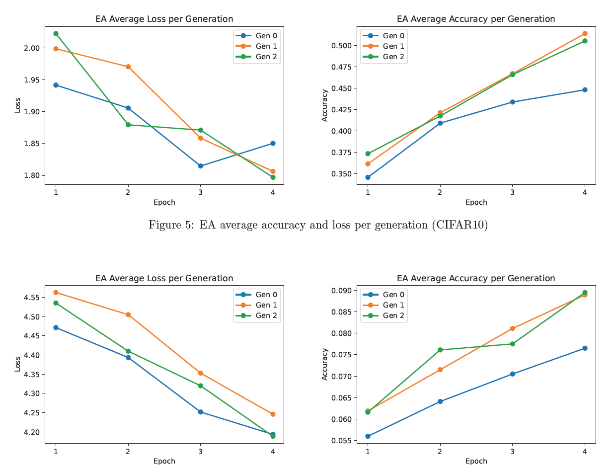
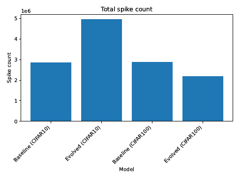
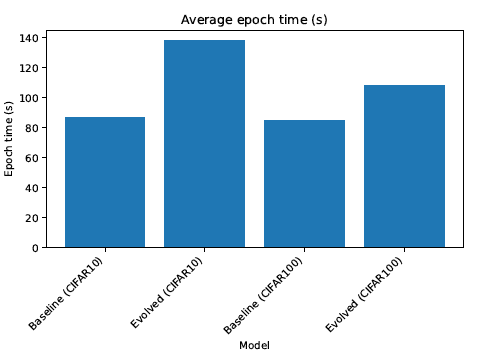

Overview
This project explores the intersection of neuromorphic computing and automated machine learning by applying
evolutionary Neural Architecture Search (NAS) to optimize Spiking Neural Networks (SNNs) with attention mechanisms.
SNNs offer significant energy efficiency advantages over traditional neural networks by communicating via discrete
spikes rather than continuous activations, making them ideal for low-power edge AI applications.
We integrated Spiking-Efficient Channel Attention (SECA) layers into a convolutional SNN and applied
an evolutionary algorithm to optimize attention placement, simulation time steps, membrane decay, and channel width.
Experiments on CIFAR-10 and CIFAR-100 demonstrated that evolutionary NAS identifies competitive architectures while
revealing critical trade-offs between accuracy, spiking activity, and computational cost.
Technical Background
Spiking Neural Networks
SNNs represent the third generation of neural networks, where neurons communicate via asynchronous binary spikes.
The Leaky Integrate-and-Fire (LIF) neuron model serves as the core computational unit:
V[t] = β V[t-1] + (1-β)I[t] - S[t-1]Vth
where β is the membrane decay factor, I[t] is the input current, and S[t-1] indicates a spike at the previous timestep.
This event-driven computation enables substantial energy savings on neuromorphic hardware.
Attention in SNNs
The SECA layer adapts channel attention mechanisms to operate directly on spike trains, preserving event-driven sparsity.
It dynamically recalibrates channel-wise feature responses, allowing the network to focus on informative channels while
suppressing redundant ones — crucial for energy-efficient deployment.
Implementation
Evolutionary Algorithm
We implemented a population-based evolutionary algorithm with the following parameters:
- Population size: 6 candidates per generation
- Elite fraction: 0.33 (top performers preserved)
- Mutation probability: 0.1 for random gene mutations
- Evaluation: 4 quick-training epochs with subset of data
Search Space
The evolutionary algorithm optimized these discrete parameters:
- Attention layers: Binary presence in 3 residual blocks (7 possible topologies)
- Time steps: 8–20 (forward pass duration)
- Membrane decay (β): 0.85–0.95 (neuron persistence)
- Channel width: 0.5–2.0 (model size multiplier)
Distributed Training
Leveraged PyTorch's DistributedDataParallel for multi-GPU training, significantly reducing experiment time.
The implementation required careful handling of membrane potential synchronization across GPUs — a non-trivial
engineering challenge unique to SNN training.

Figure 1 — Training accuracy comparison: baseline vs evolved models on CIFAR-10 and CIFAR-100
Key Results
CIFAR-10
- Evolved configuration: Single attention block, 20 time steps, β=0.92, channel width=1.0
- Performance: Comparable accuracy to baseline (~77-78%) with improved stability
- Efficiency: Increased time steps improved accuracy but increased epoch time
CIFAR-100
- Evolved configuration: Two attention blocks, 18 time steps, β=0.9, channel width=0.5
- Key finding: 2× reduction in channel width maintained accuracy while significantly reducing spike count
- Trade-off: Additional attention block didn't increase sparsity as hypothesized within limited training
Performance Metrics
- Baseline accuracy: ~77% (CIFAR-10), ~22% (CIFAR-100)
- Spike count reduction: Evolved CIFAR-100 model showed ~60% fewer spikes
- Convergence: EA identified optimal configurations within 2-3 generations


Key Technical Contributions
- Integrated SECA attention mechanism with evolutionary NAS for SNN optimization
- Implemented distributed multi-GPU training pipeline with state synchronization
- Discovered meaningful accuracy-efficiency trade-offs: evolved models matched baseline accuracy with reduced channel width
- Demonstrated feasibility of NAS for discrete-continuous SNN search space
- Built extensible framework for neuromorphic architecture search
Industry Applications
This work demonstrates skills directly applicable to:
- Neuromorphic computing: Energy-efficient AI for edge devices, IoT, and mobile platforms
- Automated ML (AutoML): Neural architecture search for hardware-aware model design
- Low-power AI: Optimizing models for deployment on resource-constrained hardware
- Research engineering: Building experimental frameworks for neural architecture exploration
Challenges & Learnings
- Multi-GPU synchronization: Solved membrane potential desynchronization across distributed workers
- Computational constraints: Navigated limited HPC cluster availability while maintaining experiment quality
- Search-efficiency trade-off: Balanced quick evaluation accuracy against full training fidelity
- Model simplification: Adapted state-of-the-art architectures to fit within computational budget while preserving scientific validity
Future Directions
- Expand search space to include attention-specific parameters (kernel size, activation functions)
- Implement multi-objective optimization balancing accuracy, sparsity, and energy
- Apply to larger datasets (ImageNet) and more complex SNN architectures
- Deploy evolved models on actual neuromorphic hardware (Loihi, SpiNNaker)